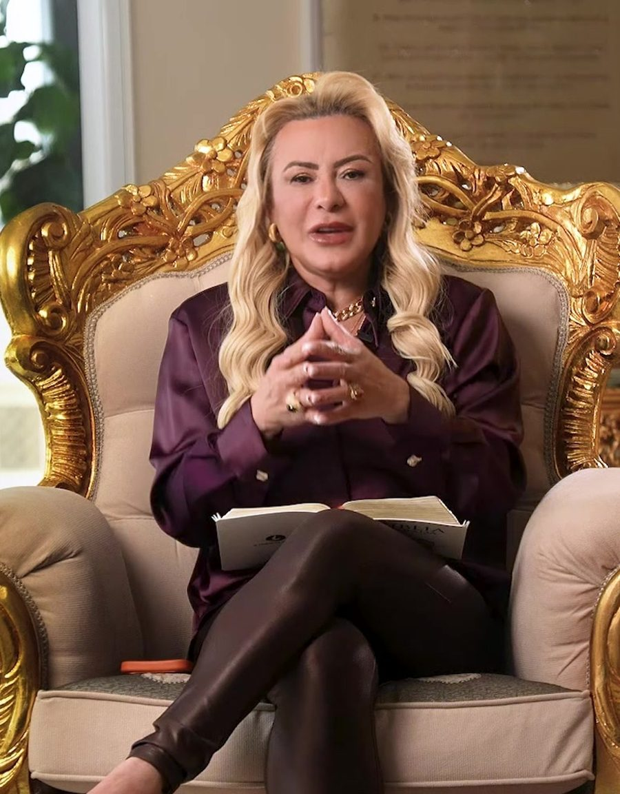

i · Em destaque
Liberação dos Caminhos para a Prosperidade
Um ensino em quinze aulas sobre fé, alinhamento e renovação espiritual.
15 aulas · 4 módulos · R$ 47 por mês
Conhecer o curso

Voz profética · Mentora
Um ensino em quinze aulas sobre fé, alinhamento e renovação espiritual.
“Eis que diante de ti pus uma porta aberta, e ninguém a pode fechar.”Apocalipse 3:8